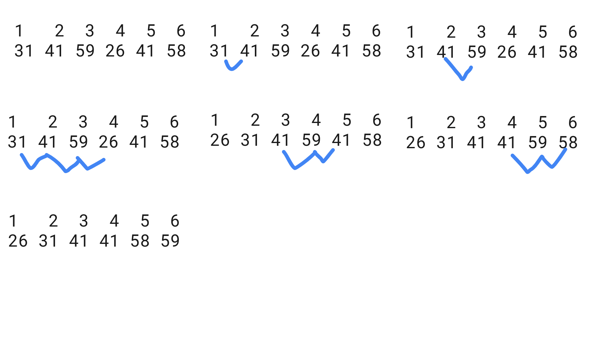

Informally, an algorithm is a series of computational steps that takes an input and returns an output in a finite amount of time. The input and output relationship is a way to describe a computational problem. So, you use algorithms because you have a problem, but no upside down.
A mathematical reader can think is a little floppy definition and maybe you thought “your definition is not the correct way to found any science” —what the heck is a computational step?— and you are right, it is an easy way to definite an algorithm, but it is not the full answer. A more accurate definition is given to you later.
Note that our definition means algorithms have to finish but exists other classes of computational methods can or can not be finished.
TODO: Mathematical definition.
Computational method.
Types.
Algorithm.
Computational problem.
If you write an algorithm it has to work for each valid input instance.
Models of computation.
There are several models of computation such as Lambda calculus, or Turing Machine, but in fact, they are equivalent (we are not proving that statement here, you can explore them in Models of computation). We are focusing on Von Neuman Languages and Random Access Machines, which are the current paradigm in computing. It means we describe algorithms with assignments and side effects, but by Turing-Church thesis, you can write your algorithms in a functional programming style.
Random Access Machine Emulator (by Simon Gottlieb and Simon Koennecke). (2014, October 24). Retrieved from https://farbtrommel.de/ram
If you are interested in learning algorithms based on Lambda Calculus, you should read some of the following books
Stone, J. D. (2018). Algorithms for Functional Programming. Springer.
Bird, R., & Gibbons, J. (2020). Algorithm Design with Haskell. Cambridge University Press.
RUSSELL, D. (2003). Algorithms: A Functional Programming Approach by Fethi Rabhi and Guy Lapalme, Addison-Wesley, 1999, ISBN 0-201-59604-0, xi 235pp. Journal of Functional Programming,13(4), 828-829. doi:10.1017/S0956796803244877
Representations and codification.
You can change your representation by encoding the way the underlying machine can do operations. So, you could write an algorithm in English and then change the representation to hardware circuit specification. For example, 3 can be represented as III, 011, or Г. The last is the Cyrillic alphabet’s 3.
Language specification
A pseudocode is a way to learn algorithms, but somehow you should be capable to understand it.
f(n: NaturalNumber): NaturalNumber
sum = 0
for i in 0 <= i <= n where i++
sum += i
return sum
Data structures
Specification.
Immutability and Mutability. State.
In place.
Sequence
Extrinsic order
Array
Array in C
Linkedin list
Dynamic Array
List in Python
Sequence AVL
Set
Intrinsic query set.
Data structures
Array
Dynamic Array
Direct Access
Hash Table
Set AVL
Bits
Encode a set as bits. It is a faster data structure since you are changing your algorithm to a clever representation! Every operation works T(n)=O(1).
class Set:
set = 0
GOAL = 100
hasReachGoal():
return set == GOAL
remove(element: int)
return set ^= (1 << element)
has(element: int)
return (set & (1 << element)) == (1 << element)
insert(element: int)
return set |= 1 << element
Summary
Worked examples
// Each bit in our set is 2^n, where n is a integer.
// bin(2^0)=000001, bin(2^1)=000010, bin(2^2)=000100, ...
// 1 << n is equivalent to 2^n but faster
"insert" operation example
000000 // set = 0
000100 // n=2, bin(1 << n)=bin(2^2)=000100
000100 // set | 000100
"has" operation example
000101 // set = 5
000100 // n=2, bin(1 << n)=bin(2^2)=000100
000100 // (set & 000100) == 000100
"remove" operation example
000101 // set = 5
000100 // n=2, bin(1 << n)=bin(2^2)=000100
000001 // set ^ 000100
"goal"
000 // Suppose you want a full 3-bit vector
// So
1000 // bin(1 << 3)=bin(2^3)=8
111 // bin((1<<3)-1)
Analysis of algorithms
Efficiency
Algorithm efficiency is more significant than differences due to hardware. Why should learn about algorithms? Applications use them either to solve larger problems than ever before or rely heavily upon algorithms.
Some authors write efficiency and complexity interchangeably, we prefer to refer to our analysis as time efficiency and space efficiency, but you can search for them as Time complexity and Space complexity.
Informally, We have the running time like T:n→time and S:n→space where n is the size of the input. We usually compare algorithms based on their time and their results. The resources required by an algorithm on the instance size and instance representation.
👉🏻
Time analysis is …
👉🏻
Space analysis is …
Requirements for resource analysis.
Independence. The analysis must be independent of the hardware of a computer, the programming language used for pseudocode, and the programmer that wrote the code.
The algorithm is correct if it can solve the given problem. An incorrect algorithm may halt with a partial or nothing solution. That algorithm could be useful if we control their error rate. However, most time we focused on the correct algorithms.
Formal verification and reasoning about algorithms
Proving Programs Correct
Your algorithm needs a way to prove if it is correct, a well-known way to verify formally your algorithms is the Hoare logic —including loop invariant and Weakest Precondition Calculus—. Indeed, it is a way to reason about your algorithm too.
Algorithms have some conditions that should be true to say an algorithm is correct such that the input would be correct, and the same as the output. They are predicates, the first kind is a precondition and the last one is a postcondition. You can have whatever number you need.
You can think of preconditions as a formal definition of the input problem, and postconditions as a formal definition of the output problem.
Another way to think about preconditions and postconditions is like you are designing a contract where your "interface client" (who will call your interface) and a "supplier" (your interface) agree on a "contract" that defines obligations (preconditions that definite the correct way to use your interface) in order to receive benefits (postconditions or output).
Typing your function is a way to definite them, but sometimes types are not enough to express the “contract”.
Depending on your algorithm, you have also to consider security.
Logic. Mathematics. Code. Automatic Verification such as Lean Proven or Frama-C.
Languages in Anki.
Projects
Summary
FAQ
How can we analyze algorithms with standard input or standard output? Network? or generally speaking input-output calls?
In this knowledge unit —Algorithms, we work with algorithms that don’t have to block calls such as network calls or standard input output calls, but if you have to measure the efficiency of an algorithm in such a situation it counts as constant time because it doesn’t depend on any input instance.
For example:
f(n: ℕ): void
for i in 0 <= i <= n with i++
fetch("some network call {n}") # It is constant time
The algorithm time efficiency is Ω(n) since you are reducing your problem to call to another process.
But, you should know network calls and other I/O calls are the most time-consuming.
Framework Thinking about the design and analysis of algorithms (Getting started)
Sum of sequence
Input: A non-null sequence of n real numbers [a1,a2,a3,...,an].
Output: A real value r, such that r=∑inai
SUM(A)
n = A.length c1(1)
r = A[n] c2(1)
for j = n-1 downto 1 c3(n)
do r = r + A[j] c4(n-1)
return r c5(1)
Invariant loop. At the start of each iteration of for loop of lines 3-4, r is equal to elements from n to last values n−j.
Initialization.
Before the first loop iteration, j=n−1 and r=an, therefore r equals the last value, n−(n−1)=1. Which checks with the invariant loop.
Maintenance.
Before the loop iteration, j=k, thus r=an+an−1+an−2+...+an−k (the summation of last elements). At line 4j=k+1 element is added to r, i.e. the next loop iteration r=an+an−1+an−2+...+an−k+an−(k+1). Which checks with the invariant loop.
Termination.
When loop terminates j=n, n−j=n−n=0. By invariant loop We have r=an+an−1+an−2+...+an−k+an−(k+1)+...+a1.
Hence, the algorithm is correct.
We sum the product of the costs times columns T(n)=c1+c2+c3n+c4(n−1)+c5n=(c4+c5)n+(c1+c2+c3−c4).
Sorting problem by insertion sort
Input: A sequence (or array) of n numbers [a1,a2,...,an]. The numbers that we wish to sort are also known as the keys.
Output: A reordering [a1′,a2′,...,an′] of the input sequence such that a1′≤a2′≤...≤an′.
// T should be support '>' or '<' operation
sort_by_insertion_sort_in_place(array: T[]): void
for j in 2 <= j <= array.n where j++
noSortedElement = array[j] // no sorted element
// variant array[1:j-1-] is sorted
i = search_the_right_position(array, j-1, noSortedElement)
// i in j > i >= 0 with i--, so we need i+1 by size array.
array[i+1] = noSortedElement // set a new mininum.
search_the_right_position(array: T[], i: j-1 >= i >= 0, noSortedElement)
// [2,3,1] 2 >= i >= 0 noSortedElement=1, here i==2
// [2,3,3] because array[2]=3 > noSortedElement=1, here i==1
// [2,2,3] because array[1]=2 > noSortedElement=1, here i==0
// we are done because i == 0
while i > 0 and array[i] > noSortedElement
array[i+1] = array[i]
i--
// i+1 is the right position for noSortedElement
return i
def insertion_sort(numberSequence, compareFunction):
for j in range(1,len(numberSequence)):
key = numberSequence[j]
i = j - 1
while i >= 0 and compareFunction(numberSequence[i], key):
numberSequence[i+1] = numberSequence[i]
i = i - 1
numberSequence[i+1] = key
return numberSequence;
insertion_sort([4,3,2,1], lambda a,b : a > b)
void insertionSort ( int numberSequence[ ] , int length)
{
for( int j = 1 ; j < length ; j++ ) {
int key = numberSequence[ j ];
int i = j - 1;
while( i >= 0 && numberSequence[i] > key) {
numberSequence[i+1] = numberSequence[i];
i = i - 1;
}
numberSequence[ i+1 ] = key;
}
}
Worked examples
Using Figure 2.2 as a model, illustrate the operation of INSERTION-SORT on the
array A=[31,41,59,26,41,58]
Rewrite the INSERTION-SORT procedure to sort into monotonically decreasing instead of monotonically increasing order.
search_the_right_position(array: T[], i: j-1 >= i >= 0, noSortedElement)
// We only change '>' to '<'. Invariant is the same.
while i > 0 and array[i] < noSortedElement
array[i+1] = array[i]
i--
return i
insertion_sort(array, compare_as: a < b)
Consider the searching problem:
Input: A sequence of n numbers A D ha1; a2;:::;ani and a value .
Output: An index i such that D AŒi or the special value NIL if does not
appear in A.
Write pseudocode for linear search, which scans through the sequence, looking
for . Using a loop invariant, prove that your algorithm is correct. Make sure that
your loop invariant fulfills the three necessary properties.
Worked examples
1. Give an example of an application that requires algorithmic content at the application level, and discuss the function of the algorithms involved.
Page Rank Algorithm by Google. Search web about Internet.
2. Suppose we are comparing implementations of insertion sort and merge sort on the same machine. For inputs of size n, insertion sort runs in 8n2 steps, while merge sort runs in 64nlg(n) steps. For which values of n does insertion sort beat merge sort?
When is 8n2 faster than 64nlg(n)? That implies ∀n∣8n2<64nlg(n)
3. What is the smallest value of n such that an algorithm whose running time is 100n2 runs faster than an algorithm whose running time is 2n on the same machine?
When is 100n2 faster than 2ncontinually? That implies from n0 to ∞, 100n2<2n i.e. sup(n)∣100n2<2n.
100n2=2n2n100n2=1eln(2n)n2=1001enln(2)n2=1001n2e−nln(2)=1001ne−nln(2)/2=1012−nln(2)e2−nln(2)=20−ln(2)W(20−ln(2))=2−nln(2)n=ln(2)−2W(20−ln(2))={0,15}sup(n)=15 from 15 to ∞, 100n2<2n
Problem 1-1 Comparison of running times
For each function f(n) and time t in the following table, determine the largest size n of a problem that can be solved in time t, assuming that the algorithm to solve the problem takes f(n) microseconds.
eg.
If the size of a problem is n=106 and f(n)=n, the problem takes
f(106)=106 microseconds = 1 second.
So, the problem is this statement:
f(n)=t microseconds
Since the functions are monotone-increasing functions, t increases when n, so n is the largest size of the problem.
The problem needs the inverse function.
n=f−1(t)
But we need to transform the domain into seconds, now t are seconds, but f−1 receives microseconds.
n=f−1(t×106)
eg. n=f−1(1×106) means the largest size n of a problem in 1 second if f−1 is a monotone-increasing function.
@startmindmap
* Sorting and Order Statistics
** Objectives: Learn different sorting algorithms and their properties, and study order statistics
** Contents
*** Heapsort
**** Heap data structure
**** Building a heap
**** Heapsort algorithm
**** Analysis and efficiency
*** Quicksort
**** Partitioning
**** Quicksort algorithm
**** Analysis and efficiency
**** Randomized quicksort
*** Sorting in linear time
**** Counting sort
**** Radix sort
**** Bucket sort
*** Medians and order statistics
**** Selection problem
**** Lower-bound for comparison-based sorting
**** Randomized selection algorithm
**** Order statistics tree
*** Summary
**** Sorting is a fundamental problem in computer science
**** Different sorting algorithms have different properties and efficiencies
**** Order statistics deal with finding the kth smallest element in a set
**** Key concepts: heapsort, quicksort, counting sort, selection problem, order statistics
@endmindmap
@startmindmap
* Data Structures
** Objectives: Understand the basic data structures and their properties, and analyze their efficiency in terms of space and time
** Contents
*** Elementary data structures
**** Arrays
***** Definition
***** Operations
***** Space complexity
***** Time complexity
**** Linked lists
***** Definition
***** Operations
***** Space complexity
***** Time complexity
**** Stacks
***** Definition
***** Operations
***** Space complexity
***** Time complexity
**** Queues
***** Definition
***** Operations
***** Space complexity
***** Time complexity
**** Dequee
*** Hash tables
**** Direct-address tables
***** Definition
***** Operations
***** Space complexity
***** Time complexity
**** Hash tables with chaining
***** Definition
***** Operations
***** Space complexity
***** Time complexity
**** Hash functions
***** Definition
***** Operations
***** Space complexity
***** Time complexity
**** Analysis and efficiency
***** Space complexity
***** Time complexity
*** Binary search trees
**** Binary Tree (AKA Binary Search Tree or BST)
***** Definition
***** Operations
***** Space complexity
***** Time complexity
**** Tree traversals
***** Definition
***** Operations
***** Space complexity
***** Time complexity
**** Binary search tree property
***** Definition
***** Operations
***** Space complexity
***** Time complexity
**** Operations on binary search trees
***** Definition
***** Operations
***** Space complexity
***** Time complexity
**** Balanced binary search trees
***** Definition
***** Operations
***** Space complexity
***** Time complexity
**** Analysis and efficiency
***** Space complexity
***** Time complexity
*** Priority queues
**** Heaps
***** Definition
***** Operations
***** Space complexity
***** Time complexity
**** Priority queue operations
***** Definition
***** Operations
***** Space complexity
***** Time complexity
**** Implementations
***** Definition
***** Operations
***** Space complexity
***** Time complexity
**** Analysis and efficiency
***** Space complexity
***** Time complexity
*** Summary
**** Data structures organize and store data for efficient access and modification
**** Efficiency in terms of space and time is important in designing and analyzing data structures
**** Key concepts: arrays, linked lists, stacks, queues, hash tables, binary search trees, priority queues
@endmindmap
@startmindmap
skinparam shadowing false
skinparam roundcorner 15
skinparam linetype ortho
* Design Techniques
** Divide and Conquer
*** How?
**** Recursively divide problem into smaller subproblems
**** Solve subproblems independently
**** Combine solutions into a single solution to the original problem
*** Examples
**** Mergesort: sort an array by dividing it into two halves, sorting the halves, and merging them together. [CLRS, Knuth]
**** Quicksort: sort an array by partitioning it into two subarrays around a pivot element, and then recursively sorting the subarrays. [CLRS, Knuth]
**** Strassen's Algorithm: multiply two matrices by recursively dividing them into smaller submatrices, computing intermediate matrices, and combining the results. [CLRS]
**** The Closest Pair Problem: find the pair of points in a set that are closest together by recursively dividing the set and computing the closest pairs in each subset, and then combining the results. [CLRS]
** Dynamic Programming
*** How?
**** Divide problem into smaller subproblems
**** Compute solutions to subproblems, storing intermediate results
**** Combine solutions to subproblems into a solution to the original problem
*** Examples
**** Rod Cutting: find the maximum revenue from cutting a rod into pieces of different lengths with different values. [CLRS]
**** Matrix-Chain Multiplication: find the optimal way to multiply a chain of matrices by dividing it into subproblems and combining the results. [CLRS]
**** Longest Common Subsequence: find the longest common subsequence between two sequences by dividing the problem into subproblems and computing intermediate results. [CLRS, Knuth]
**** Optimal Binary Search Trees: find the optimal binary search tree for a set of keys with given probabilities by computing subproblems and combining the results. [CLRS]
** Greedy Algorithms
*** How?
**** Make locally optimal choices
**** Combine locally optimal choices into a global solution
*** Examples
**** Huffman Coding: compress a message by encoding frequently-occurring characters with shorter codes, using a prefix-free code. [CLRS, Knuth]
**** Fractional Knapsack: fill a knapsack with a maximum weight by selecting items with the highest value per weight. [CLRS]
**** Dijkstra's Algorithm: find the shortest path between two nodes in a graph by making locally optimal choices and updating distances. [CLRS, Knuth]
**** Prim's Algorithm: find the minimum spanning tree of a graph by making locally optimal choices and adding edges. [CLRS]
** Randomized Algorithms
*** How?
**** Use randomness to solve problems
**** Probability of success can be amplified
**** Some problems can only be solved with randomness
*** Examples
**** Quicksort: randomize the choice of pivot element to avoid worst-case scenarios. [CLRS, Knuth]
**** Las Vegas Algorithms: use randomness to guarantee a correct solution, but with uncertain running time. [CLRS]
**** Monte Carlo Algorithms: use randomness to approximate a solution, with a known probability of error. [CLRS, Knuth]
**** Skip Lists: use probabilistic skipping to create a data structure with logarithmic search time. [CLRS]
@endmindmap
How to solve an algorithm problem? Reduce to a problem you already know or design your own algorithm.
Brute-force algorithms
Greedy algorithms
Worked examples
16-1 Coin changing
Consider the problem of making change for n cents using the fewest number of coins. Assume that each coin’s value is an integer.
a. Describe a greedy algorithm to make change consisting of quarters, dimes, nickels, and pennies —25, 10, 5 y 1 respectively. Prove that your algorithm yields an optimal solution.
Input. n∈Ncents.
Output. The fewest sequence of quarters, dimes, nickels, and pennies, such that their sum equals to n.
b. Suppose that the available coins are in the denominations that are powers of c, i.e., the denominations are c0,c1,...,ck for some integers c>1 and k≥1.
Show that the greedy algorithm always yields an optimal solution.
c. Give a set of coin denominations for which the greedy algorithm does not yield an optimal solution. Your set should include a penny so that there is a solution for every value of n.
d. Give an O(nk)-time algorithm that makes change for any set of k different coin denominations, assuming that one of the coins is a penny.
Linear programming
Recursion algorithm design
Divide-and-conquer
Recursive backtracking
Dynamic Programming
We define our problem as recursion, now we can apply memoization. It is about remembering and reusing subsolutions. If subproblems wouldn't repeat, you cannot apply memoization. Optimization.
Suproblem design (trick).
Given a sequence x with ∣x∣=n,
Good subproblems are prefixes (x[:i]) with Θ(n), suffices (x[i:]) with Θ(n), and substrings (x[i:j]) with Θ(n2)
A general method to memoize is the following
def memoize(solver)
memo = dict()
def caller(problem):
if problem in memo:
return memo
memo[problem] = solver(problem)
return memo[problem]
return caller
@memoize()
def solver(problem):
# base case
# relate
# topological order
solver(original_problem)
Of course, we optimize changing recursion into an iterative version. Suppose we have definite the SRTBOT of a recursion algorithm, so you can transform it.
memo = [] * n
# start in base case
for i=topological order
# instead using recursive calls,
# you call the memo and you build it bottom-up
relate memo
return memo[0] # the original problem
Recursive algorithm design paradigms.
We think subproblems as a graph and edges are dependencies between each other.
Roughly speaking, you can solve problems forward (or top-down) and backward (bottom-up).
Bird, R., & Gibbons, J. (2020). Algorithm Design with Haskell. Cambridge University Press.
The Art of Computer Programming by Donald Knuth.
Thomas H. Cormen, Charles E. Leiserson, Ronald L. Rivest, Clifford Stein. Introduction to Algorithms. The MIT Press, 4ª Ed., 2022. ISBN: 9780262046305.


{kind=link}


{kind=link}
{kind=link}
{kind=link}
{kind=link}
{kind=link}
{kind=link}
{kind=link}
{kind=link}
https://colab.research.google.com/drive/1QdQAHotL6waCUzuMMEWjbxFCD-WcdT2V#scrollTo=EOhWJY3Jrds1&line=7&uniqifier=1